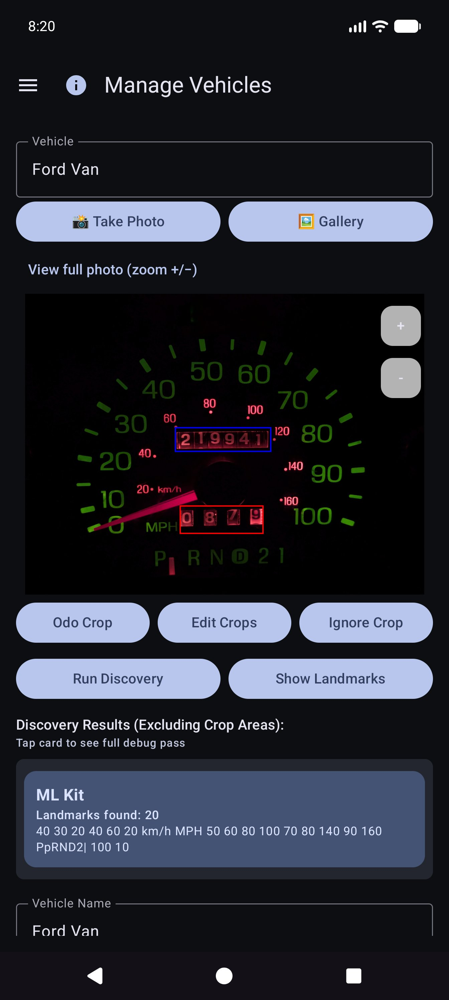
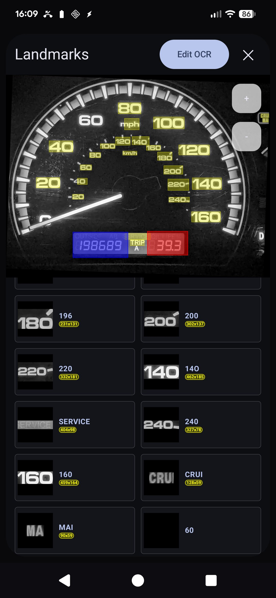
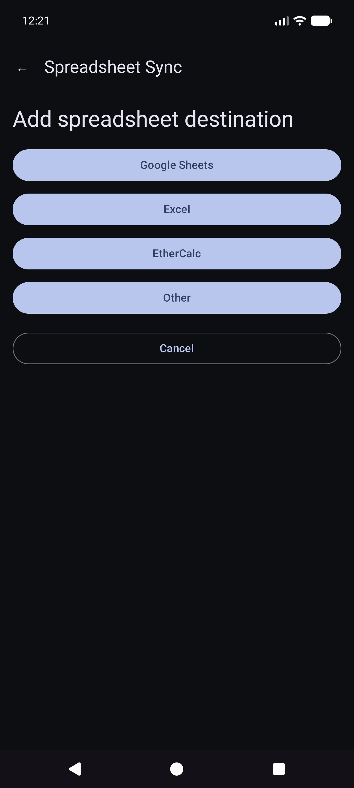
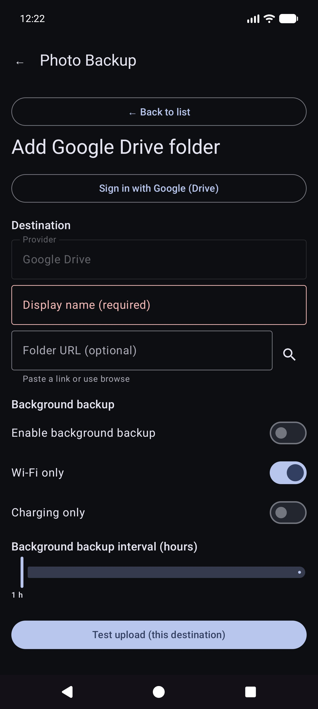
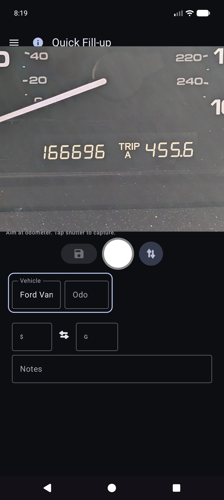
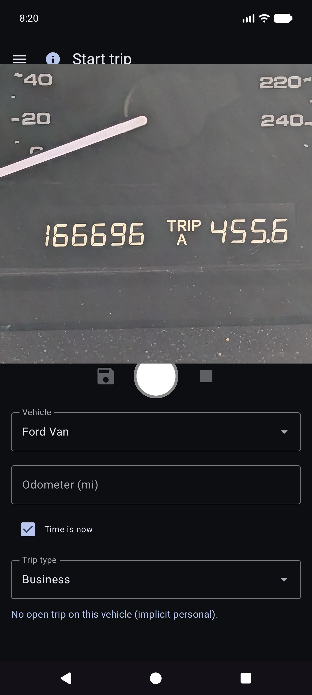
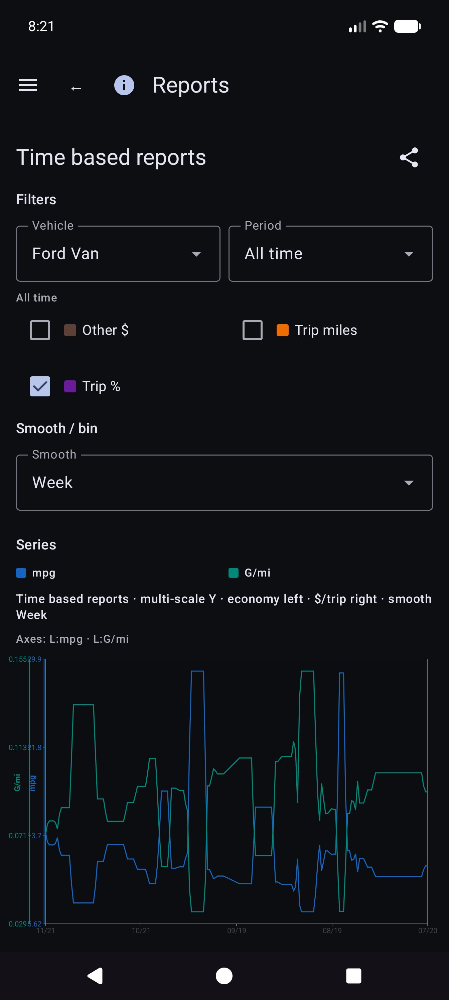
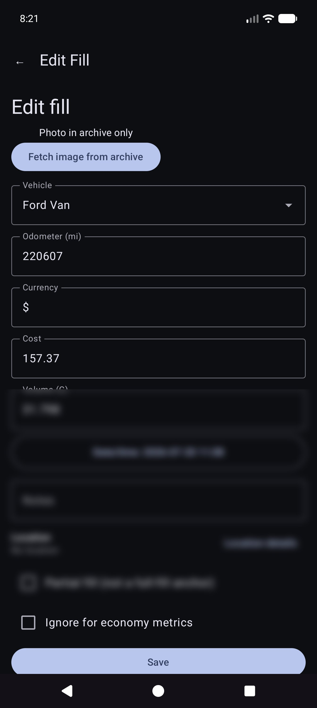
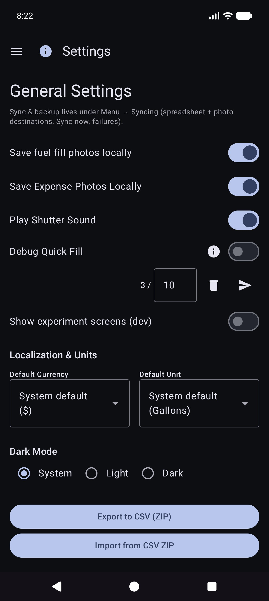
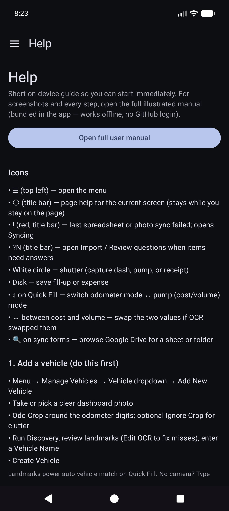

Vehicle Expenses Automated — full illustrated user manual (HTML for browsers). Edit source: docs/user-manual.md; regenerate with ./scripts/render-user-manual.sh.
Edit source (Markdown). Browsers and the in-app reader open the rendered HTML:
- Web:docs/user-manual.html(regenerate with./scripts/render-user-manual.sh)
- App: Help / About → full manual (bundled HTML + screenshots)Do not point end users at raw
.mdURLs — browsers show plain text only.
Camera-first tracking for fuel fill-ups and vehicle expenses, with optional multi-device sync and backup under your cloud accounts.
This is the full manual (screenshots + every step). On the phone, Menu → Help is a shorter getting-started guide.
Not covered here: Import Old Pictures, Alignment Experiment, and Pump Experiment (developer / advanced tools).
These appear on the main screens. Knowing them saves a lot of hunting.
| Where | Icon / control | What it does |
|---|---|---|
| Top bar | ☰ Menu (hamburger) | Opens the navigation drawer |
| Top bar | ⓘ (page help) | Short help for the current page (next to menu when available) |
| Top bar | ?N (yellow) |
Pending import review questions — opens Import review |
| Top bar | ! (red) | A spreadsheet or photo destination failed recently — open Syncing to fix |
| Top bar | ☰ + ← | Report children and Expenses list show menu and back together; Reports hub is menu only |
| Settings / fuel edit | ← | Back (settings spreadsheet/photo and fuel edit stay back-focused) |
| Quick Fill | White circle (shutter) | Capture odometer or pump display for OCR |
| Quick Fill | Disk / Save | Save the fill-up (needs a vehicle and at least one of odo / volume / cost) |
| Quick Fill | ↕ arrows (mode switch) | Toggle odometer mode vs pump (cost/volume) mode. Green border highlights the active field group |
| Quick Fill | ↔ arrows (between cost & volume) | Swap cost and volume if OCR put them in the wrong fields |
| Quick Fill | Zoom 1x / … | Camera zoom ratios when the lens supports them |
| Quick Fill (after capture) | Refresh on main button | Discard preview and return to live camera |
| Quick Fill (while processing) | X on main button | Cancel in-progress capture/OCR |
| Expense | Save | Save the expense |
| Expense | Shutter circle | Take a receipt photo |
| Expense | Gallery | Pick a receipt image from the library |
| Expense | Retake | Clear current receipt photo and shoot again |
| Expense / Manage Vehicles | + / − FABs | Zoom the photo preview |
| Landmarks dialog | Edit OCR | Correct or add landmark text the engines missed |
| Spreadsheet / Photo forms | 🔍 Search | Browse Google Drive for a sheet or folder (after sign-in) |
Currency symbols on cost fields and G/L on volume fields are tappable: open a small menu to change currency or gallons vs liters for that entry.
Main drawer: Quick Fill-up · Start trip · Manage Vehicles · New expense · Reports · Settings · Syncing · Help · About.
Experiment drawer (Settings → Show experiment screens): Alignment Experiment · Pump Experiment · Import Old Pictures.
Via Reports hub (not main drawer): Expenses list · Fill history.
OCR and automatic vehicle matching work best after you register each vehicle with a reference dashboard photo, crop the odometer, and run Discovery so the app stores landmark text for that dash. (How landmarks are chosen and matched will be documented in more detail in a later update.)
Menu → Manage Vehicles. Choose a vehicle (or Add New Vehicle).


After Show Landmarks, scroll the list and correct values. Engines sometimes miss small digits (for example a clock 60 on the bottom right of the cluster). Use Edit OCR to add or fix them so vehicle identity stays reliable.

You can still use the app by selecting a vehicle and typing odometer, volume, and cost on Quick Fill — OCR is optional for every field. Gallery import works for the reference dash photo when you prefer not to shoot in-app.
Tip: After spreadsheet sync, vehicle definitions (crops, landmarks) live in the local database — you do not need to re-open Manage Vehicles for Quick Fill to use them.
The app is built so several phones or tablets can share the same fleet data, and so you can keep a copy of your data and photos off the device. That is done with destinations you configure under your accounts or your self-hosted servers — not a company-run “Vehicle Expenses cloud” that other people can see.
| Kind | What it stores | Typical use |
|---|---|---|
| Spreadsheet / tabular sync | Vehicles, fuel fills, expenses (rows and tabs) | Multi-device merge + structured backup |
| Photo backup | Binary images (dash/pump/receipt/reference photos) | Photo backup + restore missing files |
You can configure multiple destinations of each kind (soft cap per type). Manual Sync now and background workers run the enabled ones.
Sign-in and tokens stay on the device for the providers you choose (Google, Microsoft, S3 keys, self-hosted URLs, and so on). Destinations are under full control of the user — your Google account, your OneDrive, your MinIO bucket, your EtherCalc host, etc. Nothing is shared with other Vehicle Expenses users through a shared backend.
Configured under Menu → Syncing → Spreadsheet sync (also reachable from Settings summary rows). First-class picker options:
| Target | Notes |
|---|---|
| Google Sheets | Common default; tabs for Vehicles, Expenses, and per-vehicle fuel |
| Excel | Microsoft workbook via Graph / OneDrive-style binding |
| EtherCalc | Self-hosted collaborative spreadsheet rooms |
| Other → implemented backends | Baserow, NocoDB, Airtable, PocketBase, Supabase, Firebase, Zoho Sheet |
Deferred / not headless yet (listed under Other but not fully implemented): OnlyOffice, Collabora. See also self-host index.
CSV export/import (ZIP of the same tab layout) is available from Settings as a portable backup, independent of live sync.
Configured under Menu → Syncing → Photo backup (also from Settings summary rows):
| Target | Notes |
|---|---|
| Google Drive | Folder you choose (browse or paste URL) |
| OneDrive | Microsoft account + path prefix |
| S3 | AWS, Wasabi, Cloudflare R2, MinIO, and other S3-compatible endpoints |
| Other | rclone-backed storage (e.g. WebDAV, SFTP, and other curated remotes available in the in-app picker) |
Setup cheatsheets for self-hosted photo and tabular targets: self-host index.



Vehicles, Expenses, Fuel - {vehicle name}.


Manual Sync now for photos is a full pass; background backup typically processes pending-only uploads on a schedule.
This is the home screen when you open the app.
You do not need to pick the vehicle first. When vehicles have landmarks set up in Manage Vehicles, Quick Fill auto-detects which vehicle from the dash image after you capture the odometer. You can still open the Vehicle dropdown to override if needed.
Stay in odometer mode and frame the cluster. Instruction: Aim at odometer. Tap shutter to capture.

OCR fills Odo and tries to match the vehicle from landmarks (review both if needed). The main button becomes Retry to re-shoot. Instruction summarizes the reading.


You stay on Quick Fill for the next stop (fields clear after save). Work fully offline; sync runs later in the background when configured.
On-screen tip (below the instruction line): Shutter = capture · Disk = save · ↕ = odo/pump mode · ↔ = swap cost/volume.
Menu → New expense.

Menu → Reports → Expenses list — browse past non-fuel expenses; open an item to edit.

Open a row from the list. Correct vendor, amount, category, vehicle, and description. If the receipt is only in photo backup (no readable local file), use Fetch image from archive when shown (works across configured photo destinations).

Menu → Start trip (after Quick Fill in the drawer). Capture or enter odometer, choose trip type, save with the disk icon. Stop is a shortcut for Personal now at the held GPS location. Use ⓘ for control reminders.

Trip starts are stored as fuel rows with a Trip Type (not normal fills). They appear under Reports → Trip miles, not under Fuel History.
Menu → Reports opens the product hub (all-time summary + catalog cards). This is the only product reports surface — there is no separate “Reports & Charts” drawer item.

Open a card for vehicle mode (All / Each / Single), period filters, charts, and share (TEXT / CSV / PDF). Top bar on report children: ☰ + ← (and ⓘ when registered).
The main chart card. Optional metrics (mpg, volume/distance such as G/mi, unit price such as $/G, cost/distance, monthly $, trip miles, trip % by type) with Smooth bins and independent Y scales (economy left; money and trip families on the right).


Details of economy math: REPORTS_METRICS.md.

Reports → Trip miles — miles by type, charts, and a chronological trip start / segment list. Tap a real start to open Edit fill for that row.

From Fill history, Fuel History, or Trip miles, open a fill. Layout: vehicle and odometer, currency before cost, volume, notes. Trip type appears only when the row is a trip start. Location has a summary plus Location details. Missing local photo with cloud identity: Fetch image from archive.

Other catalog cards include expenses by category, vehicle summary, and expenses list.
Money uses each row’s currency when set. Mixed-currency totals show per-currency subtotals (no silent FX conversion).
Menu → Syncing is the hub for spreadsheet and photo destinations (not only buried under Settings).

Menu → Settings.


For destinations, prefer Menu → Syncing. Settings may still show summary rows that open the same lists.
CSV export/import (ZIP of Vehicles / Expenses / Fuel tabs) is available from Settings when offered by the current build.
